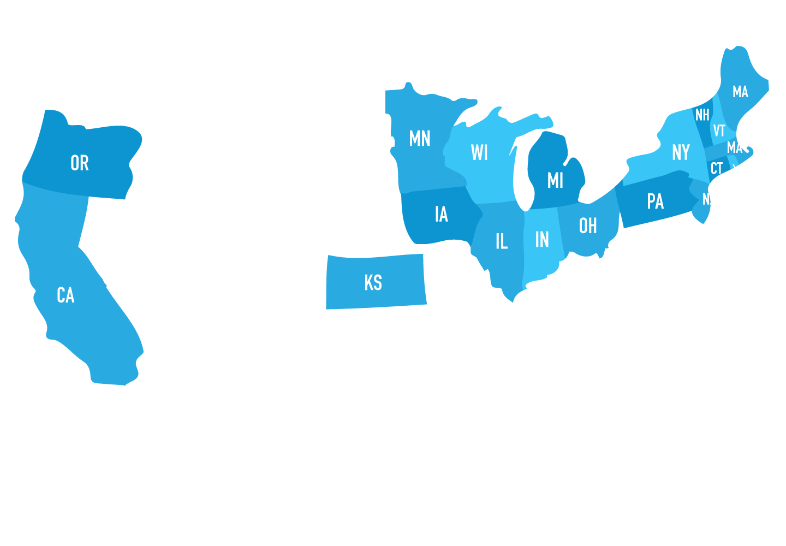
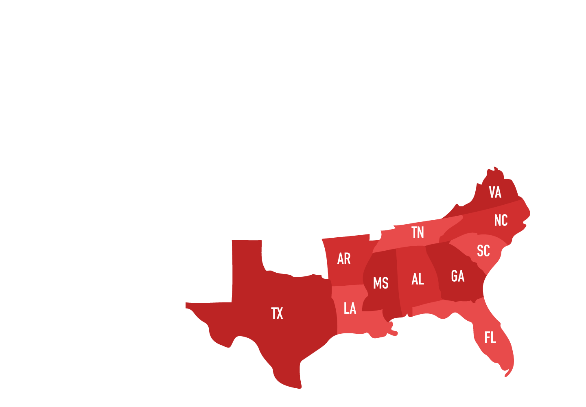
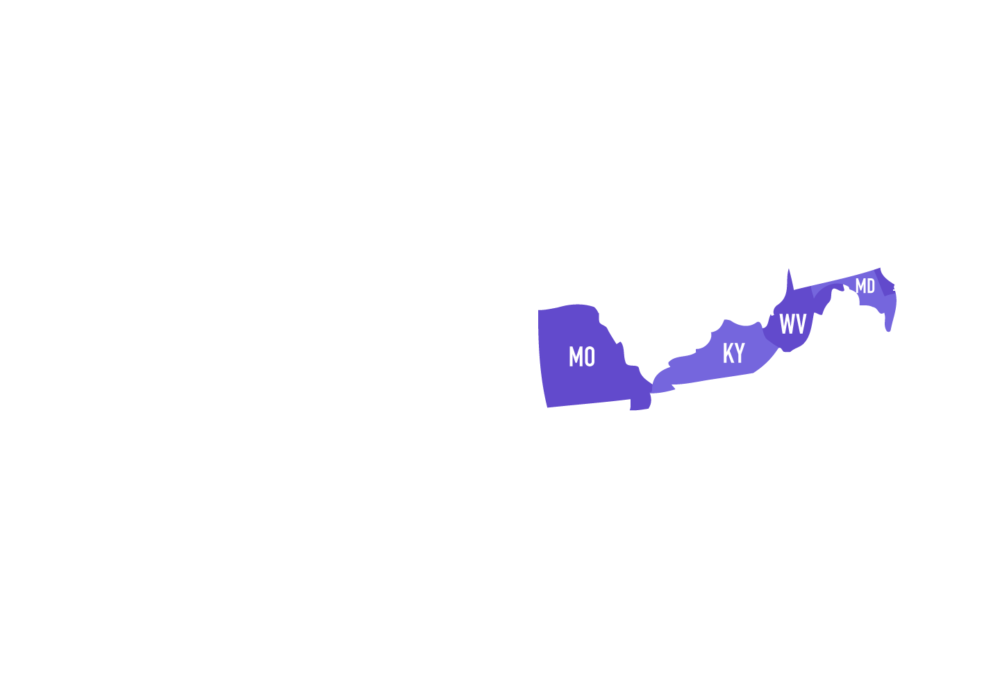
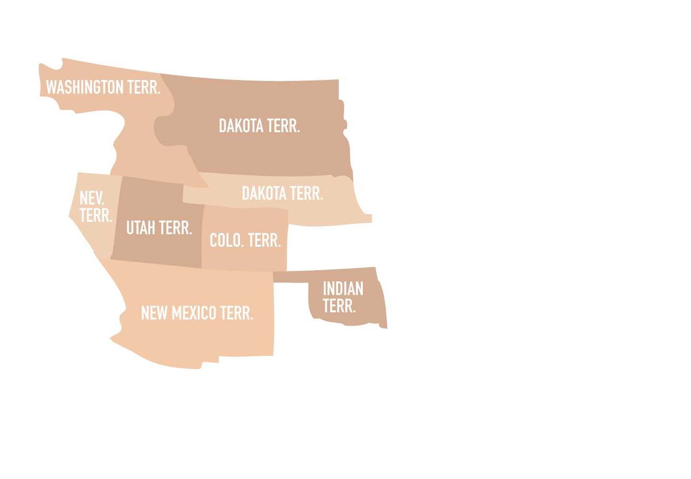
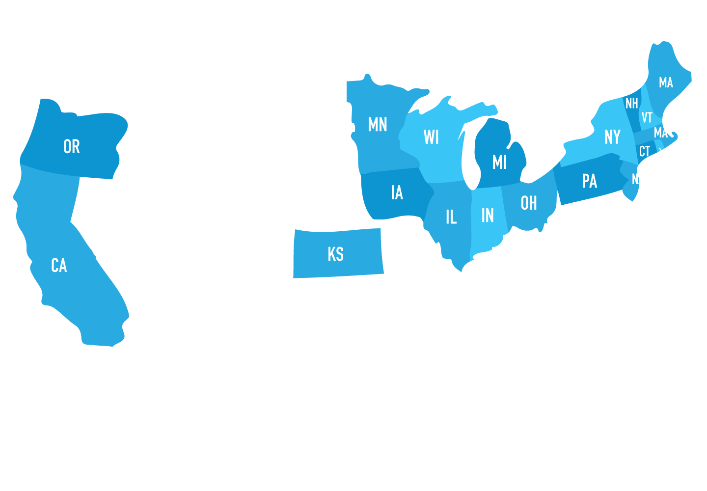
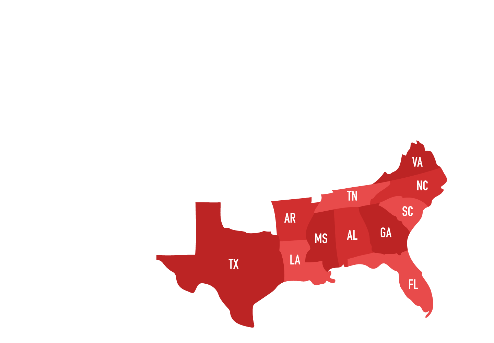
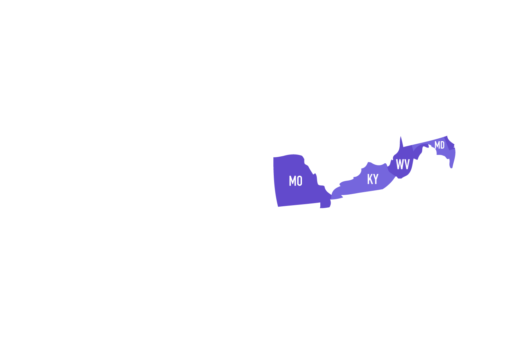
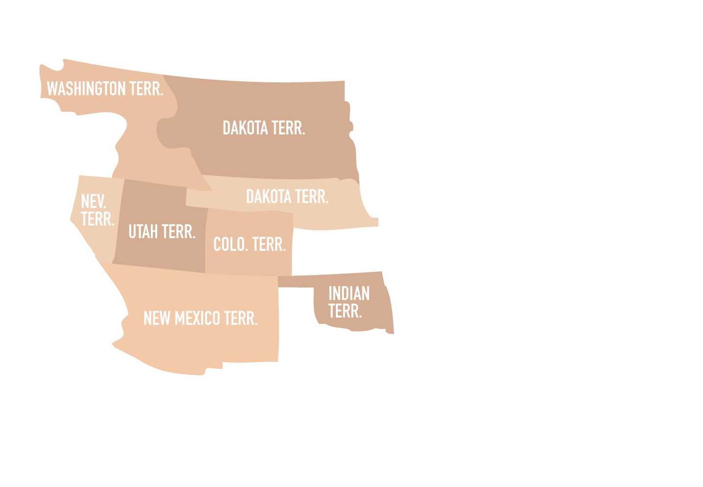

Period 5 includes the last efforts to expand our nation from sea to shining sea, the Civil War, and efforts to repair our nation with the Reconstruction Era. (AP: This is 13% of your exam, a pretty big chunk so make sure to study!)
-
Know-Nothings
1840s-1850s
-
Compromise of 1850
1850
-
Kansas-Nebraska Act
1854
-
Panic of 1857
1857
-
Dred Scott v. Sandford
March 1857
-
Election of 1860
1860
-
Secession of the Southern States
December 1860
-
Homestead Act
1861
-
Battle of Antietam
September 17, 1862
-
Emancipation Proclamation
January 1, 1863
-
Battle of Gettysburg
July 1-3, 1863
-
End of the Civil War
April 9, 1865
-
Reconstruction Era
1865-1877
-
Compromise of 1877
1877
The United States continued on with the idea of Manifest Destiny when settling in the west. Their belief in white superiority drove them forward in their quest to conquer all the land. Their desire for access to western resources and economic opportunities increased settlement in the west.
- Gadsden Purchase 1853 - Strip of land in present-day Arizona and New Mexico that the US purchased from Mexico to built railroad
- California Gold Rush 1848 - discovery of gold; sparked boomtowns and ghost towns
- Homestead Act 1862 - provided 160 acres of public land for anyone that can cultivate land for 5 years
- Pacific Railway Act 1862 - law that gave loans and land to subsidize construction for railroad
- Transcontinental Railroad 1869 (completed at Promontory Point, Utah) - built by the Irish and Chinese that bettered migration and the economy
- Union Pacific Railroad - Nebraska to Pacific
- Central Pacific Railroad - California to Nevada
- Mormons - religious organization developed by Joseph Smith and eventually Brigham Young, settled in Utah
- Panic of 1857 - financial panic due to the decline in international economy and over-expansion, inflation due to gold rush, over-growth of grain in the North; recovered during Civil War
Over this period, an influx of immigrants arrived to the United States for the opportunities that the nation had. However, immigrants were not in a great position as their differences from other Americans kept them at a disadvantage.
- Great Migration - massive migration from European nations, and Asian countries, to the US due to economic opportunities
- Irish - potato famine
- German - religious prosecution
- Chinese - opportunity
- Nativism - favoring native-born Americans; strongly against anti-Catholic, believed immigration takes away job opportunities for native Americans
- Know-Nothings Party 1850s - anti-Catholic and anti-immigration, later turned into American Party
Slavery became less and less accepted by groups and the Abolitionist movement took ground in the 1800s. Many conflicts arose from slavery and abolitionist resolved to end it. Abolitionism was mainly found in the South, but there was some support for the movement from the North.
- Underground Railroad 1850-1860 - secret network of northerners who helped slaves move to Canada or other free states
- Harriet Tubman freed at least 300 slaves
- Uncle Tom’s Cabin 1852 - Anti-slavery novel written by Harriet Beecher Stowe and fueled support from the North and in the world against slavery
The South wasn’t just going to easily give up slavery though. They valued slavery to help promote the economy and didn’t want to give up this “tradition.”
- John C. Calhoun - South Carolina political theorist that favored slavery, states rights, and nullification
- Peculiar institution - instead of using the word “slavery”(too bold), the South used this word to symbolize slavery is not that bad
However, there were attempts to try and deal with slavery as new territories were added to the United States. Trying not to overthrow the balance between free and slave states, the government devised compromises and plans to maintain the equality. This didn’t really work out though and fueled tensions between the North and South.
- Wilmot Proviso 1846 - Wilmot said the Mexican Cession land should be free territory
- The Senate rejected but raised the question of slavery in states
- Compromise of 1850 - Reconciled northerners and southerners over the issue of slavery
- Written by Henry Clay that admitted California as free state and tightened FSL. Tipped the balance between free state and slave state in the Senate
- Fugitive Slave Law 1850 - provided the return of escaped slaves from the North to the South
- Kansas-Nebraska Act - Kansas and Nebraska decide slavery over popular sovereignty; repealed the Missouri Compromise
- Bleeding Kansas - John Brown (abolitionist) and his group of followers went into Kansas trying to make it into a free state
- Eventually broke into war with Kansas people
- Popular sovereignty - proposed by Stephen Douglas who said to let the people/residents decide what kind of state they want to become
- Freeport Doctrine 1858 - Douglas said territory could exclude slavery, so let popular sovereignty decide the issue of slavery not Congress
- Dred Scott v. Sandford 1857 - see cases page
The North’s expanding economy depended on free-labor manufacturing factories while the South continued to depend on slave-based agriculture. The issue of slavery and the overwhelming nativism weakened the original political parties and led to the rise of new parties and factions.
- Free Soil Party 1848 - anti-slavery party formed from both Whigs and Democrats
- Wanted to stop slavery in the West
- Republican Party - formed after the Whigs party split over the Kansas-Nebraska Act
- Northern and western party; opposed the extension of slavery and gathered support
- Sectionalism - in both Democrats and Whigs
- Northern Democrat Stephen Douglas and Southern Democrat John Breckinridge allowed Lincoln to win
- Lincoln-Douglas Debate 1858 - Lincoln showed to be a great debate /orator that articulated his points
- Southern Secession - seceded after Lincoln won presidency
- South Carolina then 7 other states seceded on the date of inauguration - March 4, 1861
- Confederate States of America - appointed Jefferson Davis, former US Secretary of War, as the president
The Civil War officially began with the secession of southern states. The course of events seemed to follow the Revolutionary War, as the Confederates were winning. They were familiar with the land and had great leadership. However, the North improved their military leadership, used more effective strategies, and had greater resources that allowed them to win.
- Fort Sumter 1861 - union fort located in South Carolina where the Confederate Army attacked
- First battle of the Civil War
- Antietam 1862 - turning point for the North and the bloodiest day of the war
- Prompted Lincoln to issue the Emancipation Proclamation
- Vicksburg 1863 - turning point for the North
- Ulysses S. Grant seized the Mississippi River in
- Texas and Western states could not manufacture and provide weapons to the South
- Gettysburg 1863 - turning point in the East
- Meade stopped Robert Lee from invading North
- March to the Sea 1864 - William T. Sherman marched into Georgia and destroyed everything in his path
- Appomattox Court House 1865 - Robert E. Lee surrendered to Grant
- The last battle during Civil War
Along with the Civil War came the actions to move towards the end of slavery. After the war ended, slavery was officially abolished with the help of new amendments to the Constitution and legislation.
- Emancipation Proclamation 1863 - the document that really didn’t do much
- It freed slaves in the South (not under the same government) and kept slaves in the Border States
- Slaves weren’t technically free and slavery wasn’t really abolished
- It was more of a gesture
- 13th Amendment 1865 - constitutional amendment that abolished slavery in the US and its territories
- 14th Amendment 1868 - granted citizenship to natural-born Americans and naturalized citizens
- Equal Protection Clause (all citizens are under equal protection of the law)
- 15th Amendment 1870 - gave every man the right to vote
- Civil Rights Act of 1875 - laws that prohibited racial discrimination in jury selection, transportation, and business to the public (declared unconstitutional in 1883)
The country had to undergo a period of Reconstruction (1865-1877) in order to be fully functional once more. This period led to the reuniting of the union, the opening of political opportunities, and the rearranging of the relationship between white and black people.
- 10 Percent Reconstruction Plan - proposed by Lincoln
- Wanted 10% of Confederate voters to take an oath and accept the emancipation of slaves in order to join the union
- Wade-Davis Bill - wanted 50% of Confederate voters to take oath
- A harder punishment for secession
- Freedmen's Bureau 1865-1872 - federal agency established to aid former slaves in transition the to freedom
- Provided economic relief (food & cloth)and education
- Carpetbagger (Derogatory term) - term white Southerners used to describe Northerners who came to the South for economic advantages
- Scalawag (Derogatory term) - term used to describe white Southerners who cooperated with the Republican Party during Reconstruction
- Redeemers - Southern democrats who brought the Democratic party back to power and suppressed Black Reconstruction
- Compromise of 1877 - compromise between the North and South that ultimately ended Reconstruction and the dispute of the presidential election of 1876
- North takes back the troops in the South that were enforcing laws and allow Rutherford Hayes (Republican) to become president
Southern states went through a great deal of segregation as white people did not want to accept them into society completely. They enforced laws and ideas to keep black people from becoming equal.
- Black codes - laws in Southern states that restrict rights and activities for free slaves
- Sharecropping - renting land to farm
- Tenant farmers give part of the crop to landlord as rent
- Freed slaves just become tenant farmers (similar to slavery but they get paid)
- KKK (Ku Klux Klan) - secret organization in the South after the Civil War that used violence to restore white supremacy
- Main goal was to intimidate blacks
from the Civil War and Reconstruction, there were still other domestic issues during this time period.
- Panic of 1857- over speculation in railroads and lands and a surplus of wheat
- Fueled the tension between North and South because Northerners blamed the low tariff passed by a Southern-dominated Congress
- Panic of 1873 - economic depression because of overexpansion and unregulated businesses
Bottom Line: The United States kept Manifest Destiny as an important ideal and continued to expand west. They achieved this through the Mexican Cession and the Gadsden Purchase. America now reached from sea to shining sea.
New land meant an imbalance between free and slave states. In order to keep the balance, the Compromise of 1850 and the Kansas-Nebraska Act were put into place. However, they only added to the growing tensions between the North and the South, especially with the case of Dred Scott v. Sandford.
The Civil War, lasting from 1861-1865, ended in a victory for the North. The abolishment of slavery followed shortly after during the Reconstruction Era and the Reconstruction amendments (13th, 14th, and 15th). The United States spent this time to reconcile the North and the South and tried to strengthen the nation.
 






